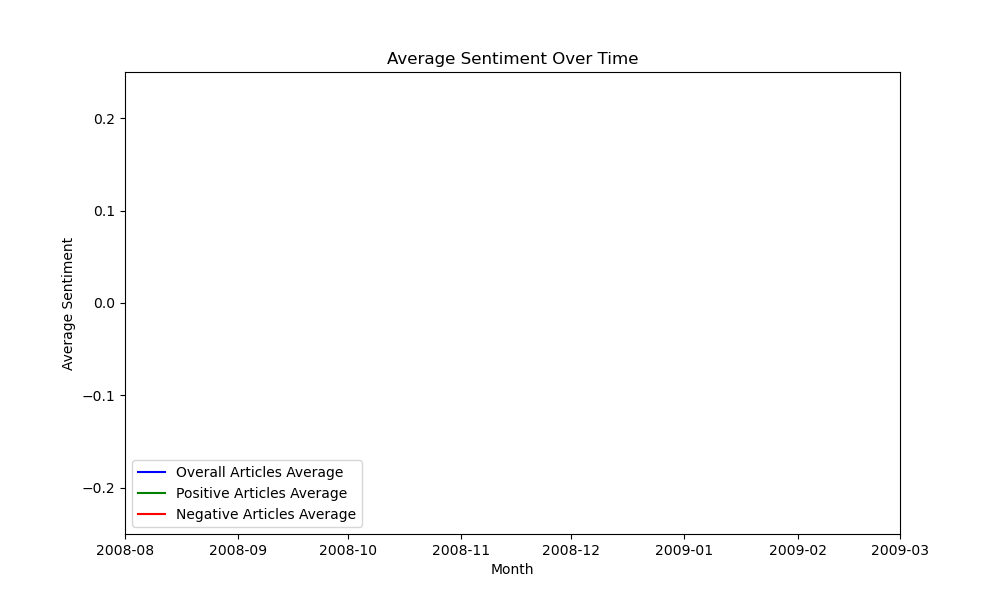

WordClouds and Key-Words
Community topics
What are the large communities in our meme network?
Our network is comprised of mostly unconnected nodes and small clusters. However, due to the sheer size of our network, we still found some large communities. The topics of these communities differ significantly. The US presidential election of 2008 is the main topic in four of the ten largest communities. Three word clouds of large communities in our network are shown below to give an overview of the topics. Our largest community is the “True crime community”. It is composed of articles of shocking stories, often involving killing and other horrible stories happening around the world. It’s the type of article that makes people believe that everything in our world is bad. The second largest is the “US elections community”. And finally the ninth largest community is dedicated to love-life. We shall refer to it as the “Heartbeats community”.
True Crime Community
US Elections Community
Heatbeats Community
US Presidential Elections
How did the rhetorics of news articles around Obama and McCain differ?
Going further than the sentiment of the articles, we also analyzed the words used in articles related to Obama and his republican counterpart John McCain. The words most often used in their context are visualized in two word clouds. Blue for the Obama and red for McCain. A striking difference between the two, is how often Obama was used in articles with McCain, whereas the name McCain did not appear nearly as often in articles with Obama. This may likely be due to our analysis period. We analyze articles from 2008 to 2009. While both names are likely to be used in the same article before the election, the focus shifts to the winner. By the end of 2008, after Obama was elected, McCain did not get nearly as much media attention anymore.
.png)
Keyword filtering example: “Obama”
An interesting potential user feature of our tool is that one can filter the network for one or more keywords and only look at the network of articles that contain one or more of these and analyse that. We made an example with Obama, who was elected president on November 4th 2008, during the period in which our data is recorded. The visuals show how the network grows for each month, where the nodes are coloured by sentiment.
Obama timeline sentiment
The line graph shows how the monthly averages sentiment scores of all the articles, the overall positive articles and the overall negative articles change during the period from August 2008 to March 2009. Obama widely known to have had a good closing month during October before the election on November 4th, which can also be seen on the graph. It is interesting to see how the negative articles are at their most negative just before the election in October and then again in February, just as the bear market was going down to its lowest level indicated by the Dow Jones index. It is also interesting that the positivity of the positive articles seems to go up during the same periods as if to counterattack the negativity.
Obama Gif
